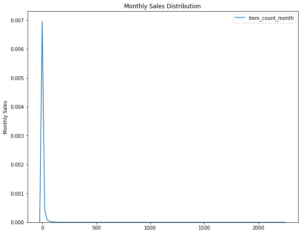
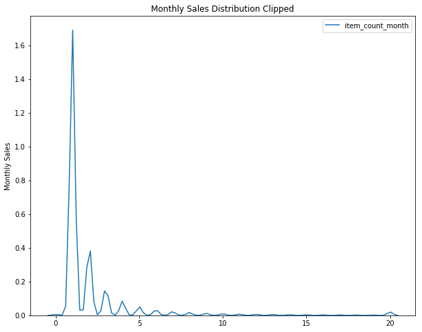

Preprocessing the Kaggle Data
Table of Contents
Introduction
This is a post to do some basic pre-processing on the data. It won't do anything fancy (i.e. no Feature Engineering), but will just get the data ready to be used by the models. In particular, the rules say that the test data target will be limited to a range and the features are categorical so we need to transform them for non-tree models.
Tangle
<<pypi-imports>>
<<local-imports>>
<<clip-it>>
Imports
import warnings
warnings.filterwarnings("ignore", message="numpy.dtype size changed")
warnings.filterwarnings("ignore", message="numpy.ufunc size changed")
From pypi
import matplotlib.pyplot as pyplot
import numpy
import seaborn
%matplotlib inline
This project
from kaggler.helpers.build_training_data import Pickles
from kaggler.helpers.helpers import Helpers
Loading the Data
This assumes you've run the build_training_data.py code to get the testing and training data sets. The Helpers class also expects a specific path, so you have to have the repository set up in ~/projects/kaggle-competitions/.
x_train = Helpers.unpickle(Pickles.x_train)
x_test = Helpers.unpickle(Pickles.x_test)
y_train = Helpers.unpickle(Pickles.y_train)
y_test = Helpers.unpickle(Pickles.y_test)
print(x_train.shape)
print(x_test.shape)
print(y_train.shape)
print(y_test.shape)
Limit the Target Range
According to the contest description the true target values are clipped to the [0,20] range, so it might make sense to clip the target data in our training and testing data to the given range.
Helpers.print_head(x_train)
| date_block_num | shop_id | item_id | item_price | item_category_id | month | year |
|---|---|---|---|---|---|---|
| 11 | 15 | 1324 | 499 | 55 | 12 | 2013 |
| 18 | 31 | 19981 | 499 | 43 | 07 | 2014 |
| 32 | 28 | 7934 | 398 | 7 | 09 | 2015 |
| 12 | 43 | 13518 | 1499 | 19 | 01 | 2014 |
| 28 | 25 | 19927 | 329 | 57 | 05 | 2015 |
print(y_train.describe())
count 1.287299e+06 mean 2.264775e+00 std 8.693074e+00 min -2.200000e+01 25% 1.000000e+00 50% 1.000000e+00 75% 2.000000e+00 max 2.253000e+03 Name: item_count_month, dtype: float64
Looking at the y-train data you can see that it ranges for -22 to 2,253 - so there is actually a huge amount of reduction in the range of the target data, but the median is only 1, so it might be that there are outliers in the data.
figure = pyplot.figure(figsize=(10, 8))
axe = figure.gca()
seaborn.kdeplot(y_train, ax=axe)
axe.set_title("Monthly Sales Distribution")
label = axe.set_ylabel("Monthly Sales")

It looks like the target is strongly right-skewed. So I guess it makes sense to clip it.
y_train_clipped = numpy.clip(y_train, 0, 20)
y_test_clipped = numpy.clip(y_test, 0, 20)
for y in (y_train_clipped, y_test_clipped):
assert y.min() == 0
assert y.max() == 20
figure = pyplot.figure(figsize=(10, 8))
axe = figure.gca()
seaborn.kdeplot(y_train_clipped, ax=axe)
axe.set_title("Monthly Sales Distribution Clipped")
label = axe.set_ylabel("Monthly Sales")

That actually didn't really fix the distribution, strangely.